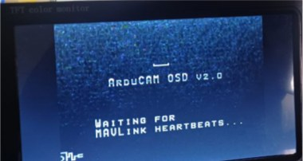

File: vtx-bench-monitor.jpg (15 KB)


Profile Sai Wai Phyo !!9V1WP ## Engineer 05/01/26(Fri)12:00:00 No.13360001 >>13360002 >>13360003 >>13360005
I build hardware that has to work in environments where failure is not an option. From liquid rocket engines at 650psi to subsea RF antenna systems to stratospheric payloads. My core strength is systems integration across mechanical, electrical, and software domains: taking a subsystem from requirements to test and operation.
Currently a Year 2 Electrical Engineering student at NUS. Formerly Aeronautical Engineering (Diploma, GPA 3.75/4.0) at Singapore Polytechnic. Self-taught in liquid propulsion, RF systems integration, FPGA-based signal processing, and embedded systems. Not from coursework but from building things and letting reality correct the model.
>87% cost reduction, BeeX subsea RF antenna >46% sea trial data throughput increase >540N peak thrust, self-designed LRE >2 balloon flights with self-designed avionics